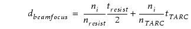
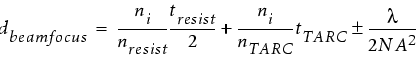

Type |
Optical Model Keyword |
Comment |
|---|---|---|
Version |
version |
Use version 12 for accuracy and consistency improvements. |
Refractive index |
ambient |
Required to be set for immersion lithography. |
Vector or scalar model? |
vectormodelflag |
Use 1 (vector). |
Optical engine |
engine |
|
DDM Model |
ddm_model full |
|
HHA Model |
hha_sectorization |
|
Starting number of optical kernels |
approxorder |
|
Final number of kernels (thin mask models only) |
Use the Kernsym utility |
|
Optical diameter |
hoodpix |
|
Optical diameter to kernel grid size relationship |
Power2LUT |
|
Kernel grid size |
kerngrid Range 0.001 to 0.03um Resolution: .0001 |
|
Number of image planes |
defocuslevels num |
Single plane (1) is recommended. |
Initial starting image plane |
defocuslevels start |
The initial optical model should have its def_start set to the center of the resist film: zdef_start=tresist / 2 + ttarc. |
Film stack |
n and k |
|
Initial beamfocus |
|
see below |
The initial optical model should have its beamfocus set to be consistent with the def_start setting using the following two-beam imaging formula:  For simplicity, the initial beamfocus value can be set to 0. |
||
Reduction factor |
magnification |
Typically 4. |
The Calibre modeling philosophy dictates that physically meaningful parameters such as SIGMA, NA, LAMBDA, and so on contained in the optical model should not be changed.
Take measurements of scanner illumination conditions. Using measured source files is preferred over parametric description of the source because they capture the actual conditions during wafer exposure. There is a slight increase in optical model calibration time when measured source maps are used. However, OPC run time is unaffected by the use of source maps.
Symmetrize the measured source map using the instructions in the section “Symmetrizing a Source Map Using the Source View Tool”.
Do not set def_start outside of the resist.
Set the weights of all measured data, including process window data, according to the quality of the data. If all process window conditions have a similar level of noise, use equal weights. If out of focus data contains more noisy data, reduce the relative weight.
Always include as much information about the optical system as possible when creating the model, such as pellicle, Jones pupil, and other information.
Calibrate focus-related parameters (beamfocus and def_start) first, using only focus-sensitive data. Then calibrate other optical model parameters on a more extensive data set.
Use a threshold (CTR) model for optical model calibration.
Calibrating pupilApodization is usually not recommended. Use Jones pupil and pellicle functions when possible; calibrating pupilApodization should only be done when significant transmission losses are present and when Jones pupil data files are unavailable.
Calibrating focusblur is generally not recommended; use measured focusblur parameters when possible.
Use Calibre MTflex for optical calibration when more remotes than primary CPUs are available to speed up calibration times.
Use “dense mode” (specifying stage1 dense and/or stage2 dense in modelflowv2 for faster model calibration, unless the modeling test patterns contain mostly 1D features.
Use the Wizard in the Optical Model GUI to help set the kernel grid and optical diameter if possible.
Entering the source pupil as it is “seen” by the tool in the entrance pupil is recommended when possible.
However, when the source shape is measured at the exit pupil, as is the case for most ASML scanners, the distortion from measuring in the exit pupil must be removed. Use the remsap command to remove this distortion.
In other words, remsap needs to remove apodization included in the source map measurement that was also added via the Jones pupil information. The remsap command applies to the case when a measured source map and Jones pupil are available.
Source Map Measurement |
Measured Source Map Includes |
Pellicle and Jones Pupil Defined Separately |
Jones Pupil Combind with Pellicle Model |
|---|---|---|---|
with pellicle on reticle |
pellicle and Jones pupil apodization |
do not use with remsap |
recommended with remsap |
without pellicle on reticle |
only Jones pupil apodization |
recommended with remsap |
do not use with remsap |
Note that the remsap command requires a Jones Pupil Data File to be available in the optical model (it must include the pupilPolarization keyword) in order to work.
The best approxorder setting depends on the tech node and layer. Generally, the required number of kernels increases as the parameter k1 decreases. Table 3 shows the recommended number of kernels. However, lower kernel counts (approxorder) and optical diameter (hoodpix) settings can often be used to improve runtime without greatly impacting the magnitude of errors in the fitting of the measured data.
Technology Node |
Lithography Type |
k1 = (min litho half-pitch/(lambda/NA) |
Number of Kernels (approxorder setting) |
|---|---|---|---|
45/40 nm |
DUV |
0.38-0.45 |
24 |
32 nm |
DUV |
0.35-0.40 |
30 |
28 nm |
DUV |
0.32-0.35 |
50 |
22/20 nm |
DUV+DP |
0.27-0.35 |
50 |
16/14 nm |
DUV+MP |
0.27-0.35 |
50 |
10/7 nm |
DUV+MP |
0.27-0.35 |
50 |
10/7 nm |
EUV |
0.32-0.40 |
30 |
For the optical diameter, which is dependent on the lambda, NA, and sigma_max settings, use the Recommend button in the Optical Model Tool, Kernel/Image tab to find the best optical diameter.
Joint mask/resist optimization can be used to obtain between 5 to 20% quality improvement for the final CM1 model error, but uses more calibration time. A recommended flow can be seen in the Calibre nmModelflow User’s and Reference Manual.
When optimizing the optical model in modelflow (Version 1) and modelflow_v2, configure the modelflow command scripts using the settings in Table 4 after specifying the starter settings.
Setting (modelflow v1 flag) |
Description |
Notes |
|---|---|---|
Search type |
The search algorithm used to find possible model solutions. |
Front is used by default. |
A summary of the suggested optimization settings is shown in Table 5:
Parameter |
<begin> <end> <num> |
Notes |
|---|---|---|
beamfocus (as listed in “Calibration Best Practices for beamfocus and def_start Paramenters”) |
||
def_start (as listed in “Calibration Best Practices for beamfocus and def_start Paramenters”) |
||
edge_transmission lossless_pt |
0.9 1 10 0.0 1.0 10 |
|
mask_model_layerN_cx mask_model_layerN_cc (N=0…4) |
0.004 0.014 10 (for DUV, CC=CX) 0.002 0.01 10 (for EUV, CC=CX) |
|
mask_model_layerN_bias (N=0…4) |
|
|
|
||
ddm_groupN |
80 90 20 |
Use known stackslope values from your mask, which are typically around 86 degrees for OMOG technology and 88 degrees for attenuated PSM technology. If you do not have your mask values, tune these settings between 80 and 90 degrees. Optimize the ddm_group only when calibrating 1D data; do not include this term when optimizing 2D data. |
Adjust the following parameters only when source parameters are not well known; use of a measured source map is recommended. |
||
sigma_out |
nominal ± 0.1, num=10 |
The outer sigma should not be allowed to vary more than 15% of the nominal value. 0 < sigma_out < 1 |
sigma_in |
nominal ± 0.1, num=10 |
The inner sigma should not be allowed to vary more than 15% of the nominal value. 0 < sigma_in < sigma_out < 1 |
illumangle |
nominal ± 10, num=2 |
The illumination angle should not be allowed to vary more than 15%. 0 < illumangle < MAX=90/180 (for quadrupole/dipole) |
Use front search with 250 iterations.
To optimize for beamfocus and def_start, Siemens EDA recommends using the “auto” keywords for the start and end of the search range.
stage1 \
beamfocus auto auto 15 \
def_start auto auto 15 \Use through-focus data to calibrate optical models whenever possible. Through-focus data is needed to calibrate focus-related parameters in the optical model.
At least three defocus settings are required.
At least 30 gauges are recommended for focus calibration.
When measured though-focus data or focusblur data are available use the flow shown in Figure 1 to calibrate beamfocus and def_start. Otherwise, use the data flow in Figure 2.
In cases where only 2D data is present, the center decision path (select 1D&2D data) in the figure is simplified to “select data for mask optimization,” and the 2D gauge data is optimized together (the separate light blue boxes become “Mask optimization for bias, ddm group, and corner chop”).
First, use the sgd_bossung_select command to select only the focus-sensitive gauges. Use the following options:
-cdtype resist_meas
-out file
This will be the filename for the output.
The filter options -maxrms and -cdswing
The -maxrms filter removes noisy measurements where the parabolas fitted to the measured CD versus focus data have an RMS fit greater than the specified value.
The -cdswing filter removes gauges that have a through-focus CD change less than the value specified, thus keeping only features that have sufficiently large CD change through focus. The focus range used is the range in the input gauge file. Suggested settings are shown in Table 6.
If sgd_bossung_select reduces the number of gauges below 10, use the “if needed” recommendations shown in the table.
Option |
Recommendation Over Focal Range of +/- (1/2)*lambda/NA2 |
Example Recommendation for lambda=193 nm and NA=1.35 Over Focal Range of +/- 0.05 Microns |
|---|---|---|
-cdtype |
resist_meas |
resist_meas |
-maxrms (nm) |
lambda/NA/150 |
1.0 |
if needed |
lambda/NA/75 |
2.0 |
-cdswing |
lambda/NA/25 |
5.7 |
if needed |
lambda/NA/50 or lambda/NA/x for increasing values of x to reduce the -cdswing value until you have more than 10 gauges |
3.0 |
For a defocus range of +/‑(1/2)(lambda/NA^2), the recommended CDswing values are appropriate. If the focal range is different, then CDswing needs to be adjusted. This range is about +/-50nm at 193nm and 1.35 NA.
The focal range used in modelflow_v2 is taken from the gauge file defocus data. In Calibre nmModelflow, the half focal range is explicitly specified using the “focusdelta” parameter.
Then, use the adjust_bossung modelflow_v2 option as shown when calibrating beamfocus and def_start for focus sensitive gauges:
stage1 \
beamfocus auto auto 15\
def_start auto auto 15\
adjust_bossung maxRMS minCDswing tol
…When you have pre-selected the calibration data to be focus-sensitive gauges using the sgd_bossung_select settings in Table 6, you can use the focus centering adjust_bossung command with the default settings for maxrms, mindCDswing, and tol. Use these defaults by calling adjust_bossung without any of its optional arguments.
If you have not selected focus-sensitive gauges, use Table 6 instead:
Option |
Default |
Recommendation Over Focal Range of +/- (1/2)* lambda/NA2 |
Example Recommendation for lambda=193 nm and NA=1.35 Over Focal Range of +/- 0.05 Microns |
|---|---|---|---|
maxrms (nm) |
10 |
lambda/NA/150 |
1.0 |
minCDswing (nm) |
1 |
lambda/NA/25 |
5.7 |
tol (um) |
0.001 |
lambda/NA/75 |
0.002 |
When run, modelflow_v2 optimizes beamfocus and def_start. Then the adjust_bossung option shifts the beamfocus post-calibration to match the measured and simulated Bossung centers. This is done in order to align the measured and simulated CD versus focus curves. It may result in the RMS value returned as not being the lowest RMS value found.
When only nominal data is available, use the flow shown in Figure 2:
In cases where only 2D data is present, the center decision path (select 1D&2D data) in the figure is simplified to “select data for mask optimization,” and the 2D gauge data is optimized together (the separate light blue boxes become “mask optimization for bias, ddm group, and corner chop”).
Set def_start to the middle of the resist, and use the adjust_bossung modelflow_v2 option with the simulated keyword (sgd_bossung_select is not used here) as shown:
stage1
adjust_bossung maxRMS minCDswing tol simulated [inputfc ]...where maxRMS, minCDswing, and tol use the settings in Table 7 and the optional argument inputfc is the input focus center value in um, with a default of 0.
When run, modelflow_v2 optimizes beamfocus, then adjusts the optimized value to match the simulated Bossung centers to zero defocus. In this case, the minCDswing argument is used to ensure that only focus sensitive gauges are used for adjustment.
The following recommendations apply to both nominal only and process window datasets:
Range of beamfocus search during calibration:
At nominal focus, the beamfocus is expected to be centered such that the focused wave and output plane are approximately at the center of the resist. Tune beamfocus by the expected focal range in each direction.
The recommended search range for data near best focus is (assuming a single TARC layer above the resist):

The overall in-focus range is expected to be about 0.5 λ/NA2.
Increase the above range by 2x, using the same center when the nominal data are not at best focus.
Use a range and stepping scheme for def_start calibration:
Tune def_start from the top to the bottom of the resist.
The recommended search range for def_start is (assuming a single TARC layer above the resist):
The spatial wavelength of standing waves in resist is λ/(2nresist). For full search, def_start spacing should be g*λ/(4nresist), where g is 0.3-0.5. This samples the standing wave 4-6 times per period.
If you are generating thin-mask and DDM models, follow the above procedures to optimize beamfocus and def_start twice, once without DDM and HHA models and once with DDM and HHA models.